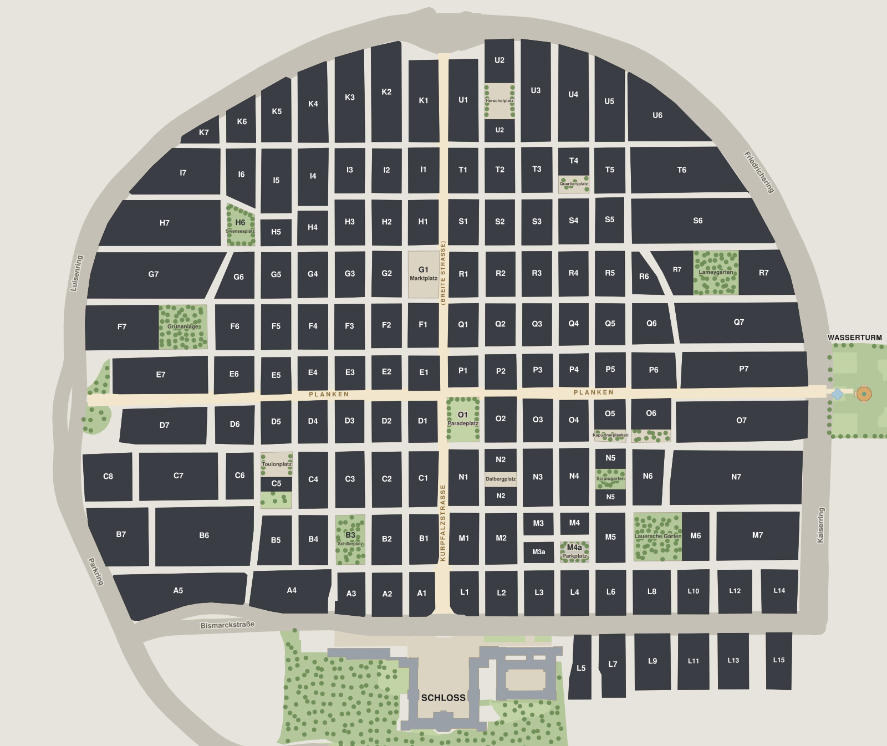
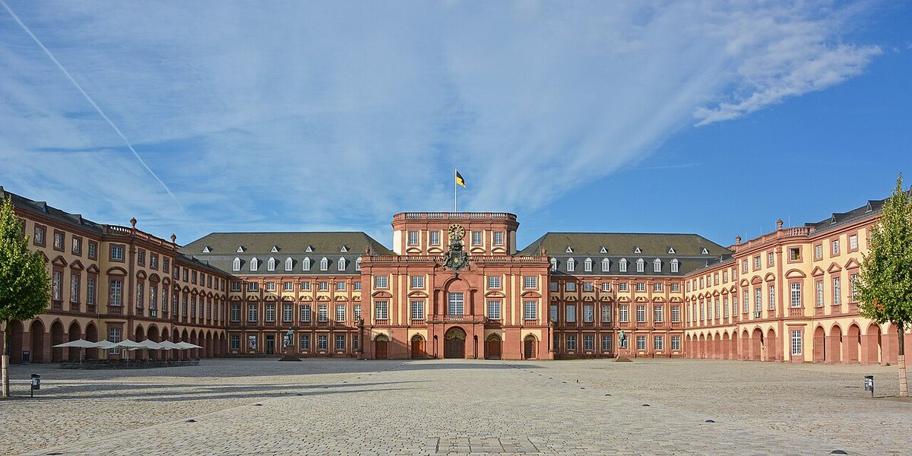
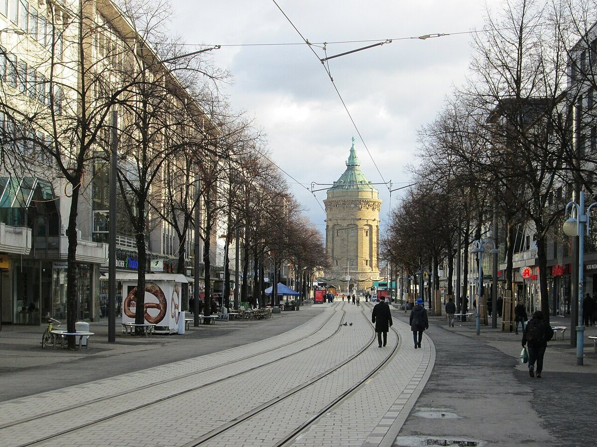

Über uns
Quadrate zeigt die Mannheimer Innenstadt mit allen 146 Quadraten auf einer Karte. Ein Studienprojekt an der DHBW Mannheim.
Die Idee

Die Innenstadt von Mannheim ist ein Raster. Statt Straßennamen tragen die Häuserblöcke Kürzel aus einem Buchstaben und einer Zahl: die Quadrate. Die Buchstaben A bis K liegen links der Kurpfalzstraße, L bis U rechts davon. Gezählt wird vom Schloss aus nach Norden, die Zahlen steigen von der Kurpfalzstraße nach außen. Eine Adresse wie „M 2, 11“ heißt also: Quadrat M2, Haus Nummer 11.
Dieses Raster ist schon eine Karte. Jeder Block hat einen Namen und eine feste Stelle. Wir zeigen die 144 Quadrate und die beiden Teilblöcke M3a und M4a auf einem Lageplan und sammeln zu jedem Quadrat, was es dort gibt: Orte zum Essen, Trinken, für Kultur und zum Shoppen.
Unser Ziel für die fertige Website: eine Karte, die zeigt, was wann geöffnet hat. Du wählst Wochentag, Uhrzeit und Kategorie, und die Quadrate färben sich danach. Die Orte und ihre Öffnungszeiten stammen aus OpenStreetMap, einer freien Karte, an der Menschen auf der ganzen Welt mitarbeiten.
Quelle zum Raster: Wikipedia, Artikel Quadratestadt (abgerufen am 29.09.2026). Der Grundriss geht auf das Jahr 1606 zurück.
Drei Orte, die jeder kennt
-

Das Schloss: Hier beginnen die Buchstaben.
Foto: Hubert Berberich (HubiB), CC BY 3.0, Wikimedia Commons, Ausschnitt
-

Die Planken: die Achse von West nach Ost.
Foto: AnRo0002, CC0 1.0, Wikimedia Commons, Ausschnitt
-

Der Wasserturm am Ende der Planken.
Foto: Flocci Nivis, CC BY 4.0, Wikimedia Commons, Ausschnitt


So funktioniert es
- Quadrat finden. Auf der Karte steht jedes Quadrat mit seinem Kürzel.
- Quadrat anklicken. Du springst ins Verzeichnis, genau zur Zeile dieses Quadrats. Sie ist gelb markiert.
- Lesen. In der Zeile steht, wie viele Orte es dort je Kategorie gibt, und eine kurze Beschreibung. Der Link „Karte“ bringt dich zurück, das Quadrat ist dann auf der Karte markiert.
Das funktioniert nur mit HTML und CSS: Jede Zeile im Verzeichnis hat eine id, zum Beispiel q-G1, und der Link quadrate.html#q-G1 springt dorthin (Anker).
Das Team
Wir sind fünf Studierende im Studiengang Wirtschaftsinformatik an der DHBW Mannheim. Quadrate ist unser Gruppenprojekt im Modul Webprogrammierung.
- MK
Matti Katila
Inhalte und Anforderungen - NE
Nikita Ermotschenko
Design und Kreativität - NE
Niko Eibach
Programmierung - AS
Anes Sahbegovic
Programmierung - LN
Lukas Niedling
Tests und Präsentation
Das Logo

- Vier Blöcke
- Das Zeichen ist ein Ausschnitt aus der Karte: vier Quadrate an einer Kreuzung, jeder mit dunklem Dach und hellerer Kante.
- Sandfarbenes Kreuz
- Die beiden Streifen stehen für die Kurpfalzstraße und die Planken. Sie kreuzen sich am Paradeplatz, in der Mitte der Quadrate.
- Schriftzug und Farben
- Der Schriftzug ist in der Archivo Bold gesetzt, derselben Schrift wie auf der ganzen Website. Alle Farben kommen aus der Karte. Das Logo ist eine SVG-Datei und bleibt in jeder Größe scharf.
Quadrate im Video
Geplant. Hier zeigen wir in der fertigen Version ein eigenes kurzes Video (mp4) von unserer Karte. Eingebunden wird es mit dem HTML-Element <video>, ohne Verbindung zu YouTube.
Womit wir bauen
Die Website wächst mit den Vorlesungen. Diese Zwischenversion V1 nutzt nur HTML und CSS. Wir verwenden keine Frameworks und keine fremden Bibliotheken; Schriften, Fotos und Daten liegen in unserem eigenen Ordner.
| Technik | Stand | Was wir damit bauen |
|---|---|---|
| HTML Vorlesung 2 und 3 |
in dieser Version | Seitenaufbau mit Kopf, Navigation, Inhalt und Fußzeile, Tabelle aller Quadrate, Formular, OpenStreetMap-Karte im iframe, Anker-Links wie quadrate.html#q-G1 |
| CSS Vorlesung 4 und 5 |
in dieser Version | Gemeinsames Design für alle Seiten, eigene Schriften mit @font-face, klickbare Karte mit position: absolute, Hervorheben mit :hover und :target, Handy-Ansicht mit Media Queries |
| JavaScript Vorlesung 6 |
folgt | Filter nach Wochentag, Uhrzeit und Kategorie, gefärbte Karte, Steckbrief, Suchen und Sortieren im Verzeichnis, später die 3D-Karte |
| PHP Vorlesung 7 |
folgt | Anmelden, Orte merken, Versand des Formulars |